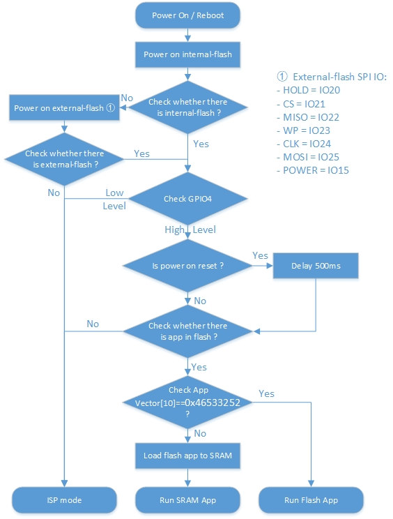
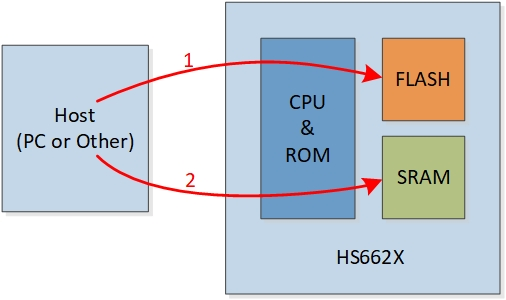
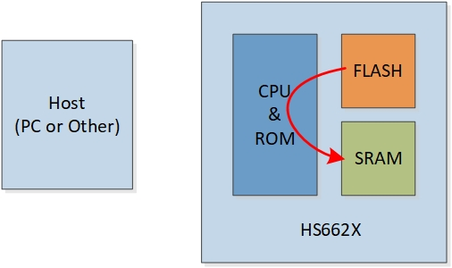

|
HS6621C Programming Guide
Bluetooth Low Energy (BLE) 5.1
|
|
HS6621C Programming Guide
Bluetooth Low Energy (BLE) 5.1
|
The HS6621C contains a tiny bootloader which is capable of:
HS6621C bootloader flow show as follow:

The GPIO4 is known as BOOT PIN. BOOT PIN can force HS6621C into ISP mode.
The IO of external-flash is:
HS6621C almost contains internal flash, so most application scenarios do not boot from external flash.
The application's VECTOR_TABLE[10] (defined in startup_xxx.s) is "App Run on SRAM" or "App Run on Flash" flag, If VECTOR_TABLE[10] == 0x46533252, app will run on FLASH directly, otherwise bootloader load FLASH app to SRAM and jump to SRAM.
There are two modes in the bootloader: ISP Mode and BOOT Mode.
When the HS6621C is powered on or reset, the bootloader will check the boot pin. If the boot pin is LOW level, HS6621C will be running in ISP mode. If the boot pin is HIGH level and sflash has a valid application, HS6621C will come into BOOT mode, otherwise BURN mode is running.


The OTA support silent upgrade, it can be compatible with Nordic (nRF51822). The "nRF connect" app work well.